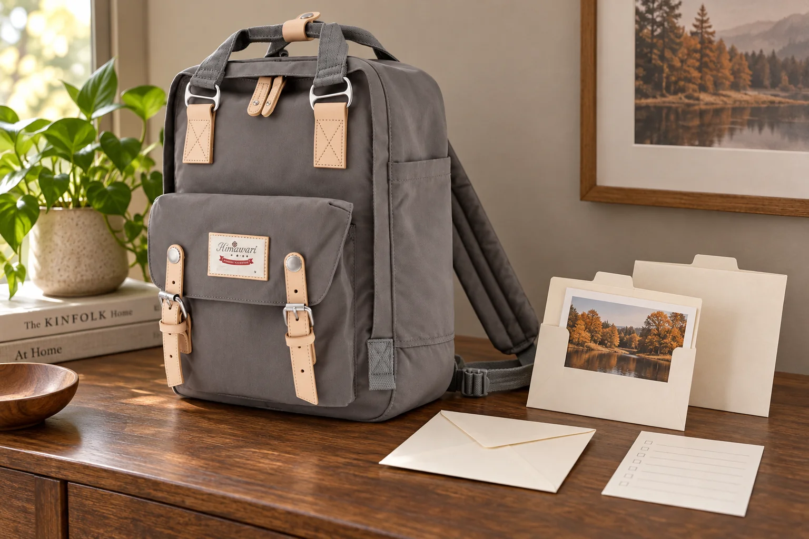
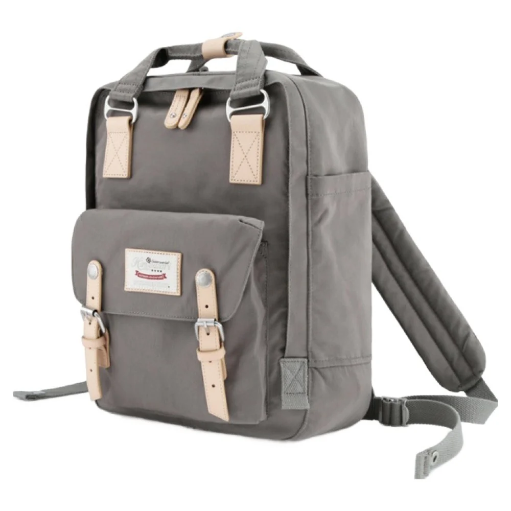

백팩 앞주머니와 큰 칸, 종이를 어디에 둘까

안내 종이 한 장을 찾으려고 백팩에서 큰 파일까지 꺼낸 적이 있다면 종이의 크기와 사용 시점을 함께 볼 수 있습니다. 작은 종이는 모두 앞주머니, 큰 종이는 모두 안쪽이라는 규칙보다 실제로 꺼낼 순간을 기준으로 나누어봅니다. 오늘 이동 중 다시 볼 종이인지, 도착한 뒤 한 번 펼칠 자료인지에 따라 필요한 깊이가 달라집니다.
먼저 가방에서 종이를 한곳에 모아 크기가 비슷한 것끼리 봅니다. 지금 당장 필요한 작은 안내와 집에서 보관할 자료는 같은 봉투에 두어도 쓰임이 다릅니다. 분류 이름을 많이 만들기보다 이동 중 다시 꺼낼 범위만 고릅니다. 작은 사진이나 인쇄물은 사용하는 보관품까지 포함한 크기로 칸을 비교합니다.
앞주머니는 작은 종이보다 닫힌 묶음으로
낱장을 바로 넣으면 포켓 안에서 모서리가 안쪽으로 돌아가거나 다른 소품 밑에 들어갈 수 있습니다. 얇은 봉투나 사용하는 파일에 정리한 뒤 그 상태를 대조합니다. 포켓 입구에 봉투가 걸리지 않는지, 끝이 밖으로 남지 않는지 봅니다. 실제 칸이 작다면 종이를 억지로 접어 맞추기 전에 필요한 모양을 유지할 다른 위치를 고를 수 있습니다.
앞쪽으로 접근하기 쉬워 보여도 포켓이 깊으면 작은 종이를 손끝으로 찾아야 할 수 있습니다. 주머니 이름보다 입구를 연 뒤 잡을 위치가 남는지 직접 봅니다. 얇은 봉투가 다른 물건 뒤로 내려간다면 함께 넣는 소품을 바꾸거나 구분할 형태를 사용할 수 있습니다. 손으로 잡을 부분을 밖에 남겨 여밈을 열어두는 방법으로 대신하지 않습니다.
Himawari No.188L 제품 정보의 원본에는 회색 몸체와 밝은 연결 부분, 앞면의 덮개 형태가 보입니다. 닫힌 사진이므로 어느 칸이 어떤 깊이로 열리는지는 실제 구조 자료를 더 봐야 합니다. No.188L의 외부 크기는 가로 28 × 세로 39 × 폭 15cm입니다. 바깥 규모와 별도로 사용하려는 앞주머니의 입구와 안쪽 조건을 확인해 자신의 봉투를 대조할 수 있습니다.

큰 칸에 둘 종이는 꺼낼 경로를 남기기
넓은 파일을 주수납부에 둔다면 주변에 어떤 책과 파우치가 놓이는지 봅니다. 파일 자체가 들어간 뒤 다른 짐을 더해도 잡아 꺼낼 경로가 남아 있어야 합니다. 평평한 면을 보존하는 일에 더해 꺼낼 빈도가 선택에 영향을 줍니다. 목적지에서 한 번만 펼칠 자료라면 이동 중 쓰는 소품과 접근을 나누는 구성이 가능합니다.
같은 크기의 파일 두 개를 사용해도 사용하는 시점이 다를 수 있습니다. 오전에 제출할 파일과 집에 가져갈 파일을 함께 담았다면 먼저 꺼낼 쪽을 구별합니다. 바깥에 내용을 크게 적기보다 자신이 알아볼 표시를 사용할 수 있습니다. 어느 파일인지 확인하려고 모든 종이를 펼치는 일을 줄이는 정도면 됩니다.
파일의 순서를 바꾸었을 때 책이나 작은 파우치까지 함께 움직이는지도 확인합니다. 깊이를 얕게 쓰려다 다른 물건 위에 파일이 걸치면 모서리가 눌릴 수 있습니다. 자주 꺼낼 종이가 많다면 종이를 더 작은 규격으로 바꾸는 결론부터 내리기보다 어떤 파일을 쓰고 어디에 놓을지 검토합니다. 필요한 형태를 유지하는 것을 비교 조건으로 남깁니다.
한 번 꺼낸 종이를 다른 칸에 되넣었다면
접수대에서 안내를 보여준 뒤 급히 다른 포켓에 넣으면 다음에는 처음 정한 위치를 찾게 됩니다. 사용하는 순간에 같은 곳으로 되돌릴 수 있는지 생각해봅니다. 혼잡한 자리에서는 잠시 정리할 수 있는 곳으로 옮겨 닫힌 묶음을 되담는 방법을 고를 수 있습니다. 종이 하나를 꺼낼 때 가방 전체를 열 필요가 없도록 출발 전에 동작을 해보면 도움이 됩니다.
앞주머니에서 꺼낸 안내를 큰 파일에 넣기로 바꿀 수도 있습니다. 이미 사용이 끝나 집에서 정리할 자료가 되었다면 역할이 달라진 것입니다. 그때는 위치도 함께 바꾸었다는 사실을 알아두면 됩니다. 다음에 다시 쓸 종이인지 사용을 마친 종이인지에 따라 깊이를 달리 두면 하루 중 늘어나는 종이를 한 포켓에 계속 쌓지 않을 수 있습니다.
인화물이나 선물할 작은 종이는 꺼낼 횟수가 적더라도 모양과 표면을 다룰 조건이 있습니다. 해당 보관 안내에 맞는 봉투를 사용하고 주변 짐이 닿는 면을 살펴봅니다. 자주 꺼내지 않는다는 이유만으로 다른 물건 아래의 빈틈에 바로 넣지 않습니다. 사용 시점과 보관 조건을 함께 보면 큰 칸을 택할지 별도 운반을 택할지 이유가 분명해집니다.
두 칸을 비교할 때는 같은 종이로
현재 가방에서 앞쪽과 안쪽의 사용을 비교할 수 있다면 같은 닫힌 봉투를 각각 넣고 꺼내봅니다. 어느 쪽에서 손이 더 깊이 들어갔는지, 다른 소품을 먼저 빼야 했는지 봅니다. 포켓 이름에 익숙하다는 이유로 한쪽을 고르기보다 지금 물건으로 동작을 읽습니다. 여밈이 정상적으로 닫히는지까지 함께 확인합니다.
가방을 바꾸는 날에도 종이의 사용 목적은 유지할 수 있습니다. 이전의 앞주머니라는 위치 이름 대신 이동 중 쓸 안내라는 역할을 새 가방에 옮깁니다. 새로운 칸의 깊이와 여는 방향이 다르면 실제로 한 번 꺼내보고 정합니다. 큰 파일과 작은 봉투를 다시 짜 맞출 때에는 둘 중 무엇이 먼저 나와야 하는지 기준을 유지하면 됩니다.
다음 외출에 남길 메모는 자주 찾은 종이와 옮겨야 했던 소품이면 충분합니다. 앞주머니를 쓰는 일이 늘 편했는지, 큰 칸에 둔 파일은 필요한 순간 바로 나왔는지 적어볼 수 있습니다. 종이를 버리고 보관하는 기준은 집에서 따로 정하고 가방에서는 접근할 경로를 봅니다. 종이의 실제 외형과 사용하는 순간을 연결하면 칸의 수보다 필요한 깊이를 구체적으로 고를 수 있습니다.